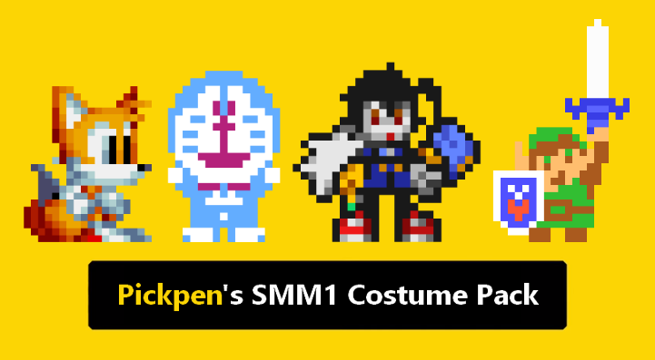
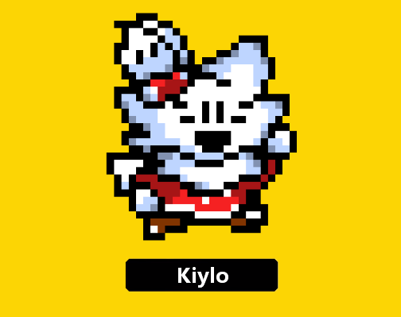
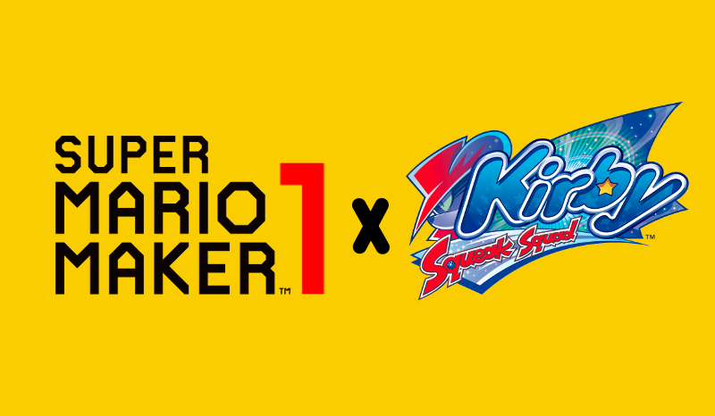
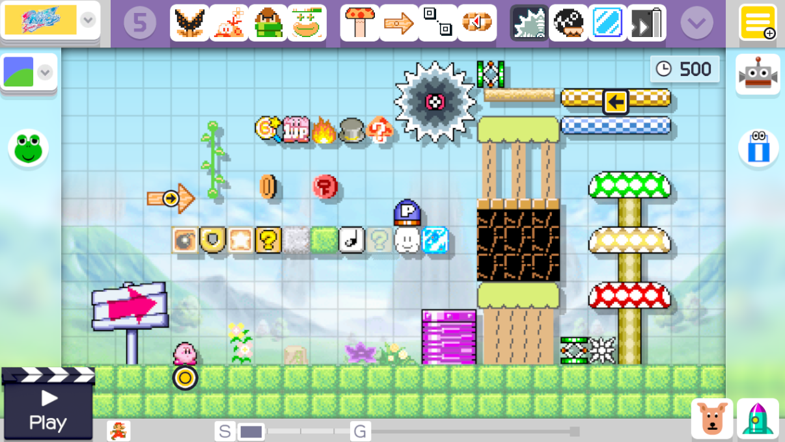
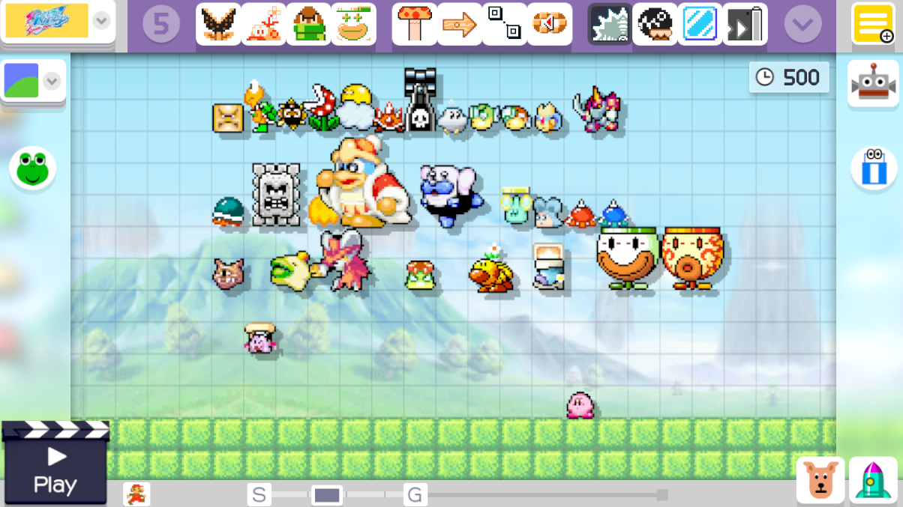
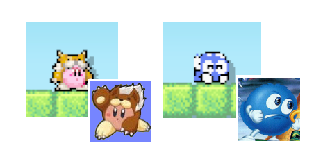
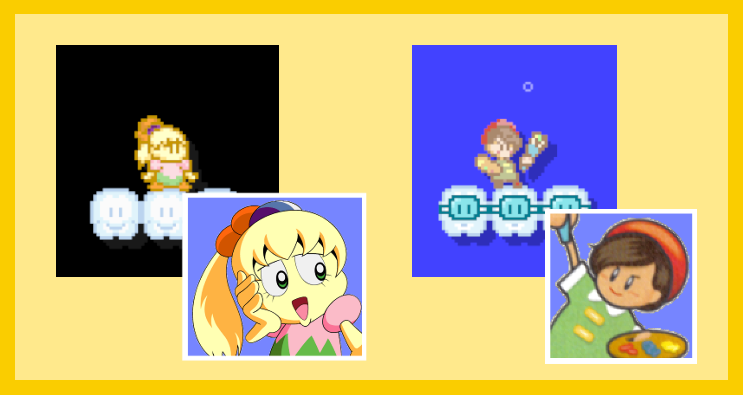

Since: 05-25-19
|
[ Male Artist ] | Digital / Pixel / Traditional Artist | Icon by: @FastFox57 |
|
Preview
|

| General information | |
|---|---|
| Name | Pickpen |
| User ID | 1914564187 |
| Groups | Normal users |
| Rank |  Acro |
| To next rank | 3 posts |
| Total posts | 7 (0.01 per day) (last post 320 days ago in Pickpen's SMM1 Costume Pack (Project Releases)) |
| Registered on | 05-25-19, 03:40 pm (554 days ago) |
| Last view | 01-14-20, 10:49 pm (320 days ago) at: /thread/822647268-kiylo-cyanboone-in-smm1?post=1451451587 |
| Total stars received | 0 |
| Total stars given | 0 |
| Presentation | |
|---|---|
| Theme | Super Mario Bros. - Ghost House · by NightYoshi370 & tee |
| Items per page | 20 posts, 50 threads |
| Layout | AcmlmBoard Layout |
| Language | Board default |

You need to be logged in to post profile comments here.
No comments.
|  This is just a little fun mod I wanted to do that replaces some characters with new ones into Super Mario Maker 1. Characters features in this mod: - Link from Super Mario Maker 2 is now in SMM1 - Klonoa replaces the Palutena costume - Doraemon replaces the Pit costume - Tails replaces the Sonic costume Sprites ripped by Frario, AzRaezel, Superjustinbros, Random Talking Bush Link to mod: http://www.mediafire.com/file/x1azkx3c3mim1fs/Pickpen%2527s_SMM1_Costume_Pack.rar/file |
| Posted on 01-14-20, 10:28 pm in Pickpen's SMM1 Costume Pack |
|---|
|  This mod adds @CyanBoone's OC, Kiylo, as a playable character in SMM1. However, it only covers the Super Mario World game style. Sprites created by yours truly Link to mod: http://www.mediafire.com/file/w2zh5t3k8xlqtdx/Kiylo_%28%40CyanBoone%29_in_SMM1.rar |
| Posted on 01-13-20, 08:51 pm in Kiylo (@CyanBoone) in SMM1 |
|---|
|  Kirby: Squeak Squad was released in 2006 and it is considered to be a decent Kirby game in the franchise itself with introducing Daroach and the Squeaks. I know it's been a while since I've made a mod for SMM1, but I wanted to give it another shot and do a mod on this game. So allow me to explain what this Kirby mod features:   - This mod replaces the SMB1 game style. - All themes have been changed to an extent to match the ones feature in Kirby: Squeak Squad, especially several of the enemies like King Dedede, Gordos, etc. - There are also some enemies that are left untouched and uses their sprites from Super Mario World like Wigglers, Spike Tops, Spinys, Koopa Troopas, Buzzy Beetles, & Podoboos.  - New Costumes: Animal Kirby replaces the Kirby costume & Lolo from Adventures of Lolo replaces the Marth costume. Sprites were ripped from The Spriters Resources by Jackster, Geo the Fox, ElectroMan, Mageker, Kung Fu Man, Kirb-Star Several of these sprites were adjusted by yours truly. EDIT: Fixed Airship & Ghost House Tileset Link to mod: http://www.mediafire.com/file/28i7o2v2myosxkp/SMM1_x_Kirby_Squeak_Squad_Mod.rar |
|
Posted on 11-19-19, 12:46 am
in Super Mario Maker 1 x Kirby: Squeak Squad (rev. 3 by Pickpen on 01-13-20, 09:44 pm) |
|---|
I love the Sonic Mania Mod .. let me send u some Music to the Mod Okay then. |
| Posted on 06-25-19, 01:16 am in Super Mario Maker 1 x Sonic Mania |
|---|
[THIS PROJECT IS CANCELLED] This mod is a proof of concept of bringing the Kirby anime into the Super Mario Maker. However, there isn't really much that has changed aside from the music and a few of the tilesets.  However, there are some Mystery Mushroom costumes that you can play around with. Fumu replaces Kirby, while Ado replaces Meta Knight. Mostly all of the sprites are custom made. Some are from The Spriters Resources. Sprites ripped by: Kirb-Star, Boo, Drshnaps, Jouw. Link to mod: https://www.mediafire.com/file/c6wvvclsclby0n2/Kirby+Anime+Mod+%28V1.0.%29.rar |
|
Posted on 06-23-19, 06:45 pm
in Kirby of the Stars Mod (CANCELLED) (rev. 1 by Pickpen on 10-10-19, 02:27 pm) |
|---|
 Sonic Mania was released in 2017, following up with DLC a year later. It's a pretty great Classic Sonic game with a few new stages, some returning stages, and new baddies as well. I thought it would be nice to make a mod based on this since there's not a lot of mods for Sonic from what I've seen. Anyways, allow me to introduce you to what this mod has to offer: Click for larger image.    Stages Featured: Classic Stages - Green Hill - Hydrocity - Lava Reef New Stages - Studiopolis - Mirage Saloon - Press Garden  As a bonus, the Sonic costume for the SMB1 style gets replaced with Ray The Flying Squirrel. Sprites were ripped from The Spriters Resources by Random Talking Bush. Some of the sprites are custom made by yours truly. Wii U Download: https://www.mediafire.com/file/crbvusuoc5igsch/SMM1_x_Sonic_Mania_Mod.rar/file |
|
Posted on 06-01-19, 02:27 pm
in Super Mario Maker 1 x Sonic Mania (rev. 2 by Pickpen on 06-01-19, 07:19 pm) |
|---|